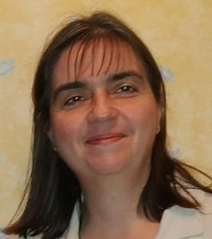

HUNcutkodjunk, kalandra fel!
A MACSEK Zeneovi csoportos magyar nyelvű foglalkozásaira 3-6 éves gyermekeket várunk. Az órák szülői részvétel nélkül zajlanak (a beszoktatási idő után). A szülőnek lehetősége van a helységen belül várakozni igény esetén.
A foglalkozásokat a következő menetrend szerint tartjuk:
9.30-10.00 szabad játék
10.00-10.40 Kerekítő Zeneovi
10.40-11.00 szünet
11.00-11.30 kézműves foglalkozás
Hasznos tudnivalók:
A MACSEK Suli csoportos foglalkozás, ahová magyarul jól tudó 6-7 éves gyermekeket várunk. Célunk, hogy lehetőséget biztosítsunk a MACSEK Suliba járó gyerekeknek a magyar nyelv és irodalom 1. osztályos anyagának elsajátítását. Olyan szülőket keresünk, akik aktívan támogatni tudják gyermeküket a tananyag elsajátításában. Mivel csoportos foglalkozásról és korlátozott óraszámról van szó, fontos, hogy a szülők segítsék a tanító munkáját, legyen az házi feladat vagy/és rendszeres gyakorlás a foglalkozások közötti időben.
A foglalkozások a szülő jelenléte nélkül zajlanak. Mivel a MACSEK-ben ovis foglalkozás is zajlanak párhuzamosan, a MACSEK Sulihoz tartozó szülők nem tartózkodhatnak az épületben. A gyermekek legalább 10 perccel a tanóra előtt legyenek a helyszínen, mivel a foglalkozások pontosan kezdődnek. Az alapfelszerelésen túl szükség lesz váltó cipőre, valamint tízóraira. A tanórák 45 percesek. Tízórai szünet van a két tanóra között.
A foglalkozások menete:
2022-HT-2022-VT: Magyar nyelv és iradolom 1. osztály
Amire még a gyerekeknek szükségük lesz:
olvasókönyv és munkafüzet (infó a zárt csoportban lesz, a beszerzésbe besegítünk)
1. osztályos vonalas füzet
négyzetrácsos füzet
sima A4-es spirál füzet
tolltartó, benne 2-3 db. normál grafit HB ceruza, radír, hegyező, színes ceruzák
A MACSEK Zeneovira a részvételi szándékot kérjük e-mailben jelezni a magyarcsemetekkozossege@gmail.com címünkre.
A tagsági díja:
Fizetési határidő: 2022. szeptember 4.
Bankgiro számunk: 544-2686
A közlemény rovatba kérjük a gyermek(ek) nevét beírni.
A 3 év alatti foglalkozások belépti díja helyben történik swicheléssel.
A MACSEK Sulira a részvételi szándékot kérjük emailben jelezni a magyarcsemetekkozossege@gmail.com címünkre.
A létszám korlátozott.
Fizetési határidő: 2022. augusztus 21.
Bankgiro számunk: 544-2686. A közlemény rovatba kérjük a gyermek(ek) nevét beírni.
MACSEK Zeneovi
Hilda Salinas Lanchipa
Az unokatestvéreim példáját követve minden vágyam volt hétévesen, hogy megtanuljak harmonikázni. Mivel a Zeneiskolában nem volt harmonikaoktatás, a választott hangszerem a fuvola lett. Tizennégy évesen felvettem emellé a zongorát, és tudatosan készültem a zenei pályára. 1998-ban végeztem a miskolci Zeneművészeti Főiskola szolfézs-zeneelmélet-karvezetés szakán. A főiskolai évek alatt Tiszaújvárosban, majd Budapesten tanítottam a hatévesektől egészen a felnőtt korosztályig. Svédországba kiköltözve ideiglenesen elhagytam a pályát. Helyette a zene iránti szeretetemet a táncban éltem ki, szabadidőmben rock&rollt, buggot, majd salsát (LA-style, NY-style, bachata) táncoltam.
Férjem indíttatására kezdtem el altfurulyán játszani, majd kislányunk születése végképp visszaterelt a pályámra. 2018 tavaszán elvégeztem mind a Ringató, mind a Kerekítő baba-mama foglalkozásvezetői tanfolyamot. Vágyam volt, hogy Stockholmban rendszeres magyar baba-mama/papa foglalkozások legyenek. 2018 őszén ez meg is valósult, és elindíthattam a Ringató foglalkozásokat a S:ta Eugenia jezsuita templom támogatásával. Ezzel egyidőben elkezdtem citerázni, gitározni és kobozolni, hogy a gyermekek minél több fajta hangszerrel találkozhassanak a foglalkozásokon.
A 2019 tavaszán létrehozott MACSEK egyesülettel szeretnék hozzájárulni ahhoz, hogy rendszeres magyar foglalkozások legyenek elérhetőek a 3-6 éves korosztálynak. Ebben a korban a gyerekek csoportosan, játszva és mozgásokkal tarkítva tanulják, és válik életük részévé a magyar kultúra és hagyomány. A választásom a Kerekítő Ovimóka módszertanára esett, amely ötvözi a drámai és zenei elemeket. Komplex szemléletmódjával közösségi élményt és örömet tud biztosítani a külföldön élő magyar gyermekeknek, ami által közösség és csapat kovácsolódik belőlük.
Azóta évente különböző továbbképzésen veszek részt, hogy minél gazdagabb és sokoldalú élményben tudjam részesíteni a hozzám járó gyerekeket.
Szeretettel várlak benneteket a foglalkozásokra!
MACSEK Suli
Tóthné Vermes Zita

Már kisgyerekként tanári pályára készültem. Családunkban hagyomány a tanítás, édesanyám, testvérem pedagógus, nagyapám is kántortanító volt. A családi példa igen motiváló volt számomra, mást nem is tudtam elképzelni, mint, hogy én is pedagógus leszek.
1996-ban szereztem első diplomámat biológia-szociálpedagógia szakon. Később, 2000-ben elvégeztem a tanítóképzőt, majd 2015-ben az ének-zene tanári Master képzést is.
Magyarországon gyermek- és ifjúságvédelmi nevelőként és pályaválasztási tanácsadóként kezdtem dolgozni. Amíg saját gyerekeim kicsik voltak, zeneóvodai foglalkozásokat vezettem, a Svédországba költözésünk előtti években pedig tanítóként dolgoztam; először egy gyakorló iskolában, ahol a leendő pedagógusok mentorálása is feladat volt, később egy családias hangulatú kisebb iskolában.
A zene mindig központi szerepet játszott az életemben. 10 évig tanultam zongorázni, és kisiskolás korom óta éneklek különböző kórusokban. 2013-ban alapítottuk a Family Singers Énekegyüttest, melynek egyik művészeti vezetője vagyok. Énekegyüttesünkkel számos nemzetközi fesztiválon és versenyen szerepeltünk eredményesen.
Hat gyermekünk van. A családdal 2019-ben költöztünk Svédországba.
Stefansgården
Frejgatan 43
11349 Stockholm
(az Odenplan metrómegállótól 5 perc séta)
A MACSEK Zeneovi foglalkozások heti rendszerességgel folynak vasárnaponként 9:30-től összesen félévenként 12 vagy 13 alkalommal.